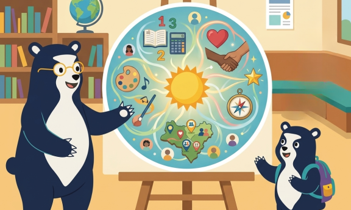
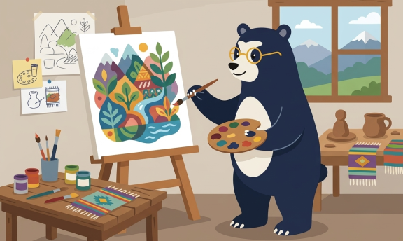
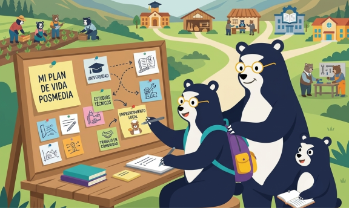

<!DOCTYPE html>
<html lang="es">
<head>
    <meta charset="UTF-8">
    <meta name="viewport" content="width=device-width, initial-scale=1.0">
    <title>OVA: El Decálogo del Buen Implementador</title>
    <link rel="icon" type="image/x-icon" href="imgs/favicon.ico">
    
    <!-- Tailwind CSS -->
    <script src="https://cdn.tailwindcss.com"></script>
    
    <!-- Configuración de Tailwind para mantener los colores OSO originales -->
    <script>
        tailwind.config = {
            theme: {
                extend: {
                    colors: {
                        excBlue: {
                            50: '#eef2f6',
                            100: '#d5e0ec',
                            500: '#3a6b9e',
                            800: '#1e3a5f',
                            900: '#0f243e', // Azul oscuro institucional
                        },
                        excYellow: {
                            400: '#facc15',
                            500: '#eab308', // Dorado institucional
                        }
                    },
                    fontFamily: {
                        sans: ['Inter', 'system-ui', 'sans-serif'],
                    }
                }
            }
        }
    </script>

    <!-- FontAwesome para Íconos -->
    <link rel="stylesheet" href="https://cdnjs.cloudflare.com/ajax/libs/font-awesome/6.4.0/css/all.min.css">

    <!-- Google Fonts -->
    <link href="https://fonts.googleapis.com/css2?family=Inter:wght@300;400;600;700;800&display=swap" rel="stylesheet">

    <!-- React & ReactDOM -->
    <script crossorigin src="https://unpkg.com/react@18/umd/react.production.min.js"></script>
    <script crossorigin src="https://unpkg.com/react-dom@18/umd/react-dom.production.min.js"></script>
    
    <!-- Babel para JSX -->
    <script src="https://unpkg.com/@babel/standalone@7.26.10/babel.min.js"></script>

    <style>
        body { 
            font-family: 'Inter', sans-serif; 
            background-color: #f1f5f9; 
        }

        /* Estilo para simular washi tape/scotch tape de la imagen */
        .scotch-tape {
            background: rgba(255, 255, 255, 0.7);
            backdrop-filter: blur(2px);
            border-left: 1px solid rgba(0,0,0,0.05);
            border-right: 1px solid rgba(0,0,0,0.05);
        }

        .card-shadow {
            box-shadow: 0 10px 15px -3px rgba(15, 36, 62, 0.08), 0 4px 6px -4px rgba(15, 36, 62, 0.08);
        }

        .card-tilt-hover {
            transition: transform 0.3s ease, box-shadow 0.3s ease;
        }

        .card-tilt-hover:hover {
            transform: translateY(-4px) scale(1.02);
            box-shadow: 0 20px 25px -5px rgba(15, 36, 62, 0.12), 0 8px 10px -6px rgba(15, 36, 62, 0.12);
        }

        .fade-in {
            animation: fadeIn 0.4s ease-out forwards;
        }

        @keyframes fadeIn {
            from { opacity: 0; transform: translateY(8px); }
            to { opacity: 1; transform: translateY(0); }
        }
    </style>
</head>
<body class="p-4 md:p-8 min-h-screen flex items-center justify-center">
    <div id="root" class="w-full max-w-6xl"></div>

    <script type="text/babel" data-presets="react">
        const { useState } = React;

        const DECALOGO_CATEGORIES = {
            title: "EL DECÁLOGO DEL BUEN IMPLEMENTADOR",
            stickyNote: {
                text: "El decálogo reúne las 10 características esenciales del implementador OSO. Actúa como una guía de roles y mentalidades para movilizar el territorio, conectar la escuela con el futuro y orientar con propósito a las juventudes."
            },
            subtitle: "TRES COMPONENTES EN EL LIDERAZGO DEL IMPLEMENTADOR",
            columns: [
                {
                    id: "saber",
                    title: "DIMENSIÓN DEL SABER",
                    desc: "La mentalidad y visión analítica necesarias para comprender el territorio, valorar las raíces de la comunidad e integrar las habilidades socioemocionales de forma holística.",
                    roles: [
                        {
                            id: 1,
                            title: "Aprendiz",
                            desc: "Reconoce que el territorio y la comunidad son fuentes de conocimiento. Asume los retos con curiosidad y mantiene un diálogo de saberes constante con los actores locales.",
                            color: "border-excBlue-500",
                            badgeColor: "bg-excBlue-800 text-white border-excBlue-900",
                            icon: "fa-book-reader",
                            svg: (
                                
                            )
                        },
                        {
                            id: 2,
                            title: "Informado/a",
                            desc: "Basa sus decisiones en datos y evidencias del territorio. Busca activamente herramientas, becas y opciones de financiamiento para conectar a los jóvenes con oportunidades reales.",
                            color: "border-excYellow-500",
                            badgeColor: "bg-excYellow-500 text-excBlue-900 border-excYellow-600",
                            icon: "fa-database",
                            svg: (
                                
                            )
                        },
                        {
                            id: 3,
                            title: "Mirada holística",
                            desc: "Reconoce que el éxito posmedia requiere un equilibrio integral: combina el fortalecimiento de competencias académicas con el desarrollo de habilidades socioemocionales clave.",
                            color: "border-excBlue-500",
                            badgeColor: "bg-excBlue-500 text-white border-excBlue-600",
                            icon: "fa-eye",
                            svg: (
                                
                            )
                        }
                    ]
                },
                {
                    id: "hacer",
                    title: "DIMENSIÓN DEL HACER",
                    desc: "La capacidad de planificar con rigurosidad, orientar las metas a resultados medibles y aplicar la creatividad adaptando cada herramienta a las particularidades del contexto.",
                    roles: [
                        {
                            id: 4,
                            title: "Planeador/a",
                            desc: "Ejecuta con cronogramas reales y presupuestos aterrizados. No deja la OSO al azar: diseña y coordina proyectos sostenibles en la comunidad educativa.",
                            color: "border-excYellow-500",
                            badgeColor: "bg-excYellow-500 text-excBlue-900 border-excYellow-600",
                            icon: "fa-calendar-alt",
                            svg: (
                                
                            )
                        },
                        {
                            id: 5,
                            title: "Orientado/a al logro",
                            desc: "Monitorea constantemente el progreso de sus estudiantes a través de indicadores y datos de pruebas OSO, convirtiendo la información en mejoras reales para la planeación.",
                            color: "border-excBlue-500",
                            badgeColor: "bg-excBlue-800 text-white border-excBlue-900",
                            icon: "fa-chart-line",
                            svg: (
                                
                            )
                        },
                        {
                            id: 6,
                            title: "Creativo/a",
                            desc: "Adapta la metodología OSO utilizando recursos dinámicos (juegos, telares, huertas). Traduce los conceptos abstractos en experiencias estimulantes y contextualizadas.",
                            color: "border-excYellow-500",
                            badgeColor: "bg-excYellow-500 text-excBlue-900 border-excYellow-600",
                            icon: "fa-lightbulb",
                            svg: (
                                
                            )
                        }
                    ]
                },
                {
                    id: "conectar",
                    title: "DIMENSIÓN DEL CONECTAR",
                    desc: "La mentalidad con la que se moviliza a la comunidad educativa, se tejen puentes con el sector productivo y se actúa como un facilitador asertivo en las decisiones de los jóvenes.",
                    roles: [
                        {
                            id: 7,
                            title: "Movilizador/a",
                            desc: "Saca la OSO del aula. Inspira e involucra a directivas, docentes y familias para que asuman un rol corresponsable y activo en el tránsito posmedia de los estudiantes.",
                            color: "border-excBlue-500",
                            badgeColor: "bg-excBlue-500 text-white border-excBlue-600",
                            icon: "fa-bullhorn",
                            svg: (
                                
                            )
                        },
                        {
                            id: 8,
                            title: "Conector/a",
                            desc: "Actúa como un puente estratégico. Vincula la escuela con empresas, centros de formación locales, becas y redes de valor del territorio para abrir caminos reales.",
                            color: "border-excYellow-500",
                            badgeColor: "bg-excYellow-500 text-excBlue-900 border-excYellow-600",
                            icon: "fa-link",
                            svg: (
                                
                            )
                        },
                        {
                            id: 9,
                            title: "Facilitador/a",
                            desc: "No impone sus propias expectativas. Acompaña a los estudiantes para que desarrollen autonomía, asumiendo el protagonismo en la planificación de su vida posmedia.",
                            color: "border-excBlue-500",
                            badgeColor: "bg-excBlue-800 text-white border-excBlue-900",
                            icon: "fa-hands-helping",
                            svg: (
                                
                            )
                        },
                        {
                            id: 10,
                            title: "Resignificador/a",
                            desc: "Conecta la práctica académica del colegio con el futuro laboral de sus estudiantes, otorgando un sentido real de oportunidad a la escuela dentro del territorio.",
                            color: "border-excYellow-500",
                            badgeColor: "bg-excYellow-500 text-excBlue-900 border-excYellow-600",
                            icon: "fa-sync-alt",
                            svg: (
                                
                            )
                        }
                    ]
                }
            ],
            quiz: [
                {
                    question: "¿Cuál rol se basa fundamentalmente en datos, evidencias y análisis de las pruebas OSO?",
                    options: [
                        "El Aprendiz",
                        "El Informado/a",
                        "El Conector/a"
                    ],
                    correctIndex: 1,
                    explanation: "El rol de 'Informado/a' toma decisiones basadas en datos objetivos, buscando becas, financiamiento y herramientas de soporte territorial."
                },
                {
                    question: "¿Qué significa ser un Resignificador dentro de la metodología OSO?",
                    options: [
                        "Limitarse a seguir el cronograma de actividades al pie de la letra",
                        "Conectar el aprendizaje escolar con el futuro, dando sentido a la escuela como un espacio de oportunidad",
                        "Hacer que todos los estudiantes escojan carreras tradicionales de la región"
                    ],
                    correctIndex: 1,
                    explanation: "El 'Resignificador' dota de propósito las clases, conectando el conocimiento académico con los proyectos de vida y futuro posmedia."
                },
                {
                    question: "¿Cuál de estos roles se destaca por integrar tanto competencias académicas como habilidades socioemocionales?",
                    options: [
                        "Mirada holística",
                        "Planeador/a",
                        "Movilizador/a"
                    ],
                    correctIndex: 0,
                    explanation: "La 'Mirada holística' entiende que para un tránsito posmedia exitoso, se requiere equilibrar el saber académico con las habilidades socioemocionales de los jóvenes."
                }
            ]
        };

        const App = () => {
            const [selectedRole, setSelectedRole] = useState(null);
            const [quizOpen, setQuizOpen] = useState(false);
            const [quizIndex, setQuizIndex] = useState(0);
            const [selectedAnswer, setSelectedAnswer] = useState(null);
            const [score, setScore] = useState(0);
            const [quizFinished, setQuizFinished] = useState(false);

            const handleAnswerSelect = (index) => {
                if (selectedAnswer !== null) return;
                setSelectedAnswer(index);
                if (index === DECALOGO_CATEGORIES.quiz[quizIndex].correctIndex) {
                    setScore(prev => prev + 1);
                }
            };

            const handleNextQuestion = () => {
                if (quizIndex < DECALOGO_CATEGORIES.quiz.length - 1) {
                    setSelectedAnswer(null);
                    setQuizIndex(prev => prev + 1);
                } else {
                    setQuizFinished(true);
                }
            };

            const resetQuiz = () => {
                setQuizIndex(0);
                setSelectedAnswer(null);
                setScore(0);
                setQuizFinished(false);
                setQuizOpen(false);
            };

            return (
                <div className="bg-white rounded-3xl shadow-2xl overflow-hidden border border-slate-200">
                    
                    {}
                    <div className="bg-excBlue-900 text-white p-6 md:p-8 flex flex-col md:flex-row justify-between items-start md:items-center gap-6 relative">
                        <div className="max-w-xl">
                            <span className="text-excYellow-400 text-xs font-bold tracking-widest uppercase mb-1 block">
                                Enseña por Colombia
                            </span>
                            <h1 className="text-2xl md:text-3xl font-extrabold tracking-tight">
                                {DECALOGO_CATEGORIES.title}
                            </h1>
                            <p className="text-slate-300 text-sm mt-2">
                                Un decálogo de mentalidades y roles indispensables para transformar las trayectorias de las juventudes del país.
                            </p>
                        </div>

                        {/* Nota adhesiva / Sticky Note inclinada con cinta adhesiva scotch/washi simulada */}
                        <div className="relative bg-excYellow-400 text-excBlue-900 p-5 pt-7 rounded-lg shadow-lg max-w-sm rotate-1 border border-excYellow-500 mt-2 md:mt-0">
                            {/* Scotch tape simulada */}
                            <div className="absolute -top-3 left-1/3 w-24 h-6 scotch-tape -rotate-2 border-x border-slate-300/30"></div>
                            <p className="text-xs font-semibold leading-relaxed">
                                {DECALOGO_CATEGORIES.stickyNote.text}
                            </p>
                        </div>
                    </div>

                    {}
                    <div className="text-center py-8 bg-slate-50 border-b border-slate-100">
                        <div className="inline-flex items-center gap-3">
                            <span className="text-excYellow-500 font-bold text-lg">✦</span>
                            <h2 className="text-lg md:text-xl font-extrabold text-excBlue-900 tracking-wide uppercase">
                                {DECALOGO_CATEGORIES.subtitle}
                            </h2>
                            <span className="text-excYellow-500 font-bold text-lg">✦</span>
                        </div>
                        <p className="text-xs text-slate-500 mt-1">Explora interactuando con cada tarjeta para conocer sus estrategias en territorio</p>
                    </div>

                    {}
                    <div className="p-6 md:p-10 grid grid-cols-1 md:grid-cols-3 gap-8 bg-white">
                        {DECALOGO_CATEGORIES.columns.map((col) => (
                            <div key={col.id} className="flex flex-col">
                                
                                {/* Encabezado de la columna */}
                                <div className="mb-6 text-center md:text-left border-b pb-3 border-slate-200">
                                    <h3 className="text-md font-black text-excBlue-900 uppercase tracking-widest flex items-center gap-2 justify-center md:justify-start">
                                        <span className="w-2.5 h-2.5 rounded-full bg-excYellow-500"></span>
                                        {col.title}
                                    </h3>
                                    <p className="text-xs text-slate-500 leading-relaxed mt-1.5">
                                        {col.desc}
                                    </p>
                                </div>

                                {/* Stack de roles del implementador */}
                                <div className="space-y-12">
                                    {col.roles.map((role) => (
                                        <div key={role.id} className="flex flex-col">
                                            {/* Tarjeta Interactiva con bordes e ilustración */}
                                            <div 
                                                onClick={() => setSelectedRole(role)}
                                                className={`card-shadow card-tilt-hover cursor-pointer bg-slate-50 rounded-2xl border-2 ${role.color} p-6 flex flex-col items-center justify-between text-center min-h-[220px] relative overflow-hidden`}
                                            >
                                                {/* Botón de expansión */}
                                                <div className="absolute top-2.5 right-2.5 bg-excBlue-100 text-excBlue-900 w-7 h-7 rounded-full flex items-center justify-center text-xs font-bold shadow-inner">
                                                    <i className="fas fa-plus"></i>
                                                </div>

                                                {/* Ilustración SVG hecha a mano */}
                                                <div className="my-2 text-excBlue-900 w-full h-40 flex items-center justify-center overflow-hidden">
                                                    {role.svg}
                                                </div>

                                                {/* Etiqueta inclinada / Slanted Badge superpuesta en la parte inferior */}
                                                <div className={`shadow-md border px-4 py-1.5 rounded rotate-1 text-[11px] font-black tracking-widest uppercase w-10/12 mx-auto translate-y-2 ${role.badgeColor}`}>
                                                    {role.title}
                                                </div>
                                            </div>

                                            {/* Descripción extendida al pie de la tarjeta - OCULTA */}
                                            <p className="hidden">
                                                {role.desc}
                                            </p>
                                        </div>
                                    ))}
                                </div>

                            </div>
                        ))}
                    </div>

                    {}
                    <div className="bg-slate-50 p-6 text-center border-t border-slate-100 flex flex-col sm:flex-row justify-between items-center gap-4">
                        <div className="text-left">
                            <h4 className="text-sm font-bold text-excBlue-900">¿Listo para medir tus conocimientos del decálogo?</h4>
                            <p className="text-xs text-slate-500 mt-0.5">Participa en el Reto Final para certificar tu comprensión y recibir feedback</p>
                        </div>
                        <button 
                            onClick={() => setQuizOpen(true)}
                            className="bg-excBlue-900 hover:bg-excBlue-800 text-white font-bold text-xs uppercase tracking-widest px-6 py-3 rounded-xl transition duration-150 inline-flex items-center gap-2 shadow-md hover:shadow-lg"
                        >
                            <i className="fas fa-medal"></i> Iniciar Reto Final
                        </button>
                    </div>

                    {}
                    {selectedRole && (
                        <div className="fixed inset-0 bg-excBlue-900/60 backdrop-blur-sm flex items-center justify-center p-4 z-50 fade-in">
                            <div className="bg-white rounded-3xl max-w-3xl w-full relative shadow-2xl border border-slate-100 overflow-hidden">
                                <button 
                                    onClick={() => setSelectedRole(null)} 
                                    className="absolute top-4 right-4 text-white hover:text-excYellow-400 transition z-10 bg-excBlue-900/40 w-8 h-8 rounded-full flex items-center justify-center"
                                >
                                    <i className="fas fa-times text-lg"></i>
                                </button>
                                
                                {/* Banner con imagen a ancho completo */}
                                <div className="w-full h-56 md:h-64 bg-excBlue-50 flex items-center justify-center overflow-hidden border-b border-slate-100">
                                    <div className="w-full h-full flex items-center justify-center p-6">
                                        {selectedRole.svg}
                                    </div>
                                </div>

                                {/* Contenido */}
                                <div className="p-6 md:p-8">
                                    <h2 className="text-2xl font-extrabold text-excBlue-900 mb-3">
                                        Rol: {selectedRole.title}
                                    </h2>
                                    <p className="text-sm md:text-base text-slate-600 leading-relaxed mb-6">
                                        {selectedRole.desc}
                                    </p>

                                    <div className="bg-excBlue-50 p-4 rounded-2xl border border-excBlue-100 flex items-start gap-3">
                                        <i className="fas fa-circle-info text-excBlue-500 mt-0.5"></i>
                                        <p className="text-[11px] text-excBlue-800 italic leading-relaxed">
                                            <strong>Reflexión territorial:</strong> En el marco de la metodología de Enseña por Colombia, ¿cómo integras este rol en tu labor con los estudiantes y las familias de tu territorio?
                                        </p>
                                    </div>

                                    <div className="mt-6 flex justify-end">
                                        <button 
                                            onClick={() => setSelectedRole(null)}
                                            className="bg-slate-100 hover:bg-slate-200 text-slate-800 font-bold text-xs uppercase tracking-wider px-5 py-2.5 rounded-xl transition"
                                        >
                                            Cerrar Vista
                                        </button>
                                    </div>
                                </div>
                            </div>
                        </div>
                    )}

                    {}
                    {quizOpen && (
                        <div className="fixed inset-0 bg-excBlue-900/60 backdrop-blur-sm flex items-center justify-center p-4 z-50 fade-in">
                            <div className="bg-white rounded-3xl p-6 md:p-8 max-w-xl w-full relative shadow-2xl border border-slate-100">
                                
                                <button 
                                    onClick={resetQuiz} 
                                    className="absolute top-4 right-4 text-slate-400 hover:text-slate-600 transition"
                                >
                                    <i className="fas fa-times text-xl"></i>
                                </button>

                                {!quizFinished ? (
                                    <div key={quizIndex} className="fade-in">
                                        <span className="bg-excBlue-100 text-excBlue-900 text-[10px] font-bold tracking-widest uppercase px-3 py-1 rounded-full mb-3 inline-block">
                                            Reto: {quizIndex + 1} de {DECALOGO_CATEGORIES.quiz.length}
                                        </span>
                                        <h3 className="text-md md:text-lg font-bold text-excBlue-900 mb-6 leading-snug">
                                            {DECALOGO_CATEGORIES.quiz[quizIndex].question}
                                        </h3>

                                        <div className="space-y-3">
                                            {DECALOGO_CATEGORIES.quiz[quizIndex].options.map((opt, i) => {
                                                let optionClass = "border-slate-200 hover:border-slate-400 hover:bg-slate-50";
                                                
                                                if (selectedAnswer !== null) {
                                                    if (i === DECALOGO_CATEGORIES.quiz[quizIndex].correctIndex) {
                                                        optionClass = "border-emerald-500 bg-emerald-50 text-emerald-900 font-semibold ring-2 ring-emerald-100";
                                                    } else if (selectedAnswer === i) {
                                                        optionClass = "border-rose-500 bg-rose-50 text-rose-900 ring-2 ring-rose-100";
                                                    } else {
                                                        optionClass = "border-slate-100 opacity-60";
                                                    }
                                                }

                                                return (
                                                    <button
                                                        key={i}
                                                        onClick={() => handleAnswerSelect(i)}
                                                        disabled={selectedAnswer !== null}
                                                        className={`w-full text-left p-4 rounded-xl border-2 text-xs md:text-sm transition-all flex items-start gap-3 ${optionClass}`}
                                                    >
                                                        <span className="w-5 h-5 rounded-full border border-slate-300 flex items-center justify-center text-xs font-bold shrink-0 mt-0.5 bg-white">
                                                            {String.fromCharCode(65 + i)}
                                                        </span>
                                                        <span>{opt}</span>
                                                    </button>
                                                );
                                            })}
                                        </div>

                                        {selectedAnswer !== null && (
                                            <div className="mt-6 bg-slate-50 border border-slate-200 rounded-2xl p-4 fade-in">
                                                <div className="flex items-center gap-2 mb-1.5">
                                                    {selectedAnswer === DECALOGO_CATEGORIES.quiz[quizIndex].correctIndex ? (
                                                        <span className="text-emerald-600 font-bold text-sm inline-flex items-center gap-1">
                                                            <i className="fas fa-check-circle"></i> ¡Correcto!
                                                        </span>
                                                    ) : (
                                                        <span className="text-rose-600 font-bold text-sm inline-flex items-center gap-1">
                                                            <i className="fas fa-times-circle"></i> Incorrecto
                                                        </span>
                                                    )}
                                                </div>
                                                <p className="text-xs text-slate-600 leading-relaxed mb-4">
                                                    {DECALOGO_CATEGORIES.quiz[quizIndex].explanation}
                                                </p>
                                                <div className="flex justify-end">
                                                    <button
                                                        onClick={handleNextQuestion}
                                                        className="bg-excBlue-900 hover:bg-excBlue-800 text-white font-bold text-xs uppercase tracking-wider px-5 py-2.5 rounded-xl transition"
                                                    >
                                                        {quizIndex < DECALOGO_CATEGORIES.quiz.length - 1 ? "Siguiente Pregunta" : "Ver Resultados"}
                                                    </button>
                                                </div>
                                            </div>
                                        )}
                                    </div>
                                ) : (
                                    <div className="text-center py-6 fade-in">
                                        <div className="text-5xl mb-4">
                                            {score === DECALOGO_CATEGORIES.quiz.length ? "🏆" : "🎯"}
                                        </div>
                                        <h3 className="text-xl font-bold text-excBlue-900 mb-2">
                                            ¡Reto Completado!
                                        </h3>
                                        <p className="text-sm text-slate-600 mb-6">
                                            Tu resultado: <span className="font-bold text-excBlue-900">{score} de {DECALOGO_CATEGORIES.quiz.length}</span> respuestas correctas.
                                        </p>
                                        <div className="bg-slate-50 border border-slate-200 p-4 rounded-2xl max-w-sm mx-auto mb-6 text-xs text-slate-600 leading-relaxed">
                                            {score === DECALOGO_CATEGORIES.quiz.length 
                                                ? "¡Excelente! Conoces e integras perfectamente todos los roles y mentalidades del decálogo." 
                                                : "Buen intento. Puedes volver a revisar las características para afianzar tus conocimientos."}
                                        </div>
                                        <div className="flex justify-center gap-3">
                                            <button
                                                onClick={resetQuiz}
                                                className="bg-slate-100 hover:bg-slate-200 text-slate-800 font-bold text-xs uppercase tracking-wider px-5 py-2.5 rounded-xl transition"
                                            >
                                                Salir del Reto
                                            </button>
                                            <button
                                                onClick={() => {
                                                    setQuizIndex(0);
                                                    setSelectedAnswer(null);
                                                    setScore(0);
                                                    setQuizFinished(false);
                                                }}
                                                className="bg-excBlue-900 hover:bg-excBlue-800 text-white font-bold text-xs uppercase tracking-wider px-5 py-2.5 rounded-xl transition"
                                            >
                                                Reiniciar
                                            </button>
                                        </div>
                                    </div>
                                )}
                            </div>
                        </div>
                    )}
                </div>
            );
        };

        ReactDOM.createRoot(document.getElementById('root')).render(<App />);
    </script>
</body>
</html>